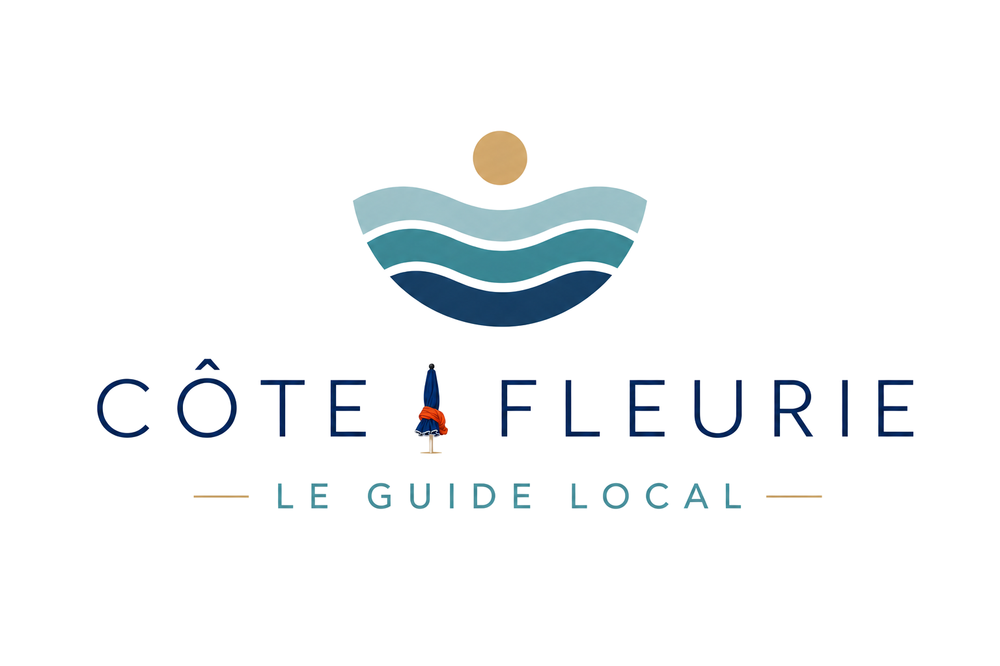

<header>
    <div class="header-content">

        <div class="logo">
            
        </div>

        <button class="burger" aria-label="Ouvrir le menu" aria-expanded="false">
            <span></span>
            <span></span>
            <span></span>
        </button>

        <nav>
            <a href="">Accueil</a>
            <div class="nav-dropdown">
                <button class="dropdown-toggle" aria-expanded="false">
                    Découvrir
                    <span>⌄</span>
                </button>
                <div class="dropdown-menu">
                    <a href="">Merville-Franceville</a>
                    <a href="./decouvrir/cabourg.html">Cabourg</a>
                    <a href="">Dives-sur-mer</a>
                    <a href="">Houlgate</a>
                    <a href="">Villers-sur-mer</a>
                    <a href="">Deauville</a>
                    <a href="">Trouville-sur-mer</a>
                    <a href="">Honfleur</a>
                </div>
            </div>
            <a href="">Expériences</a>
            <a href="">Saveurs</a>
            <a href="">Pratique</a>
            <a href="">Carte</a>
        </nav>

    </div>
</header>